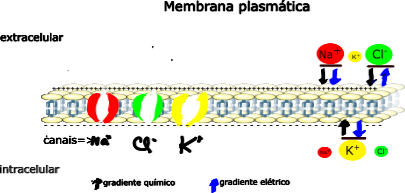
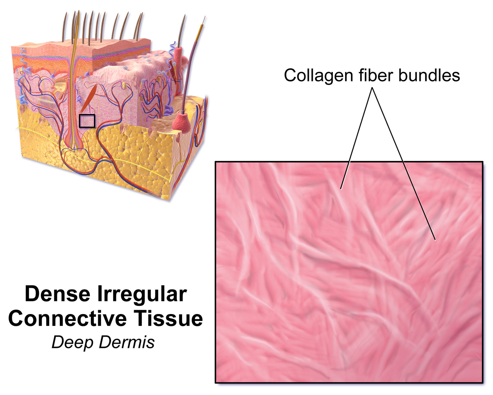
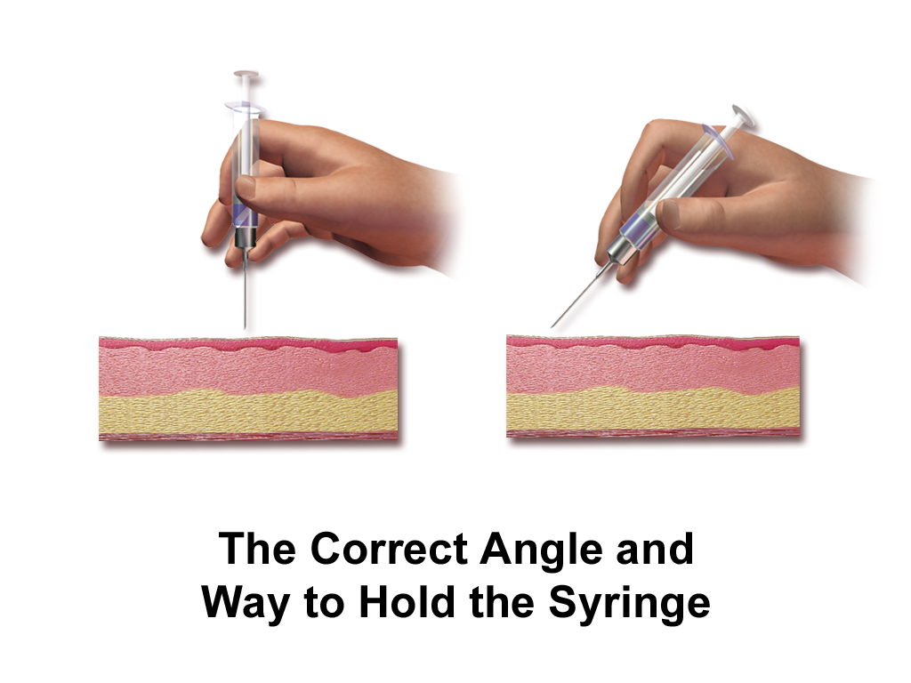
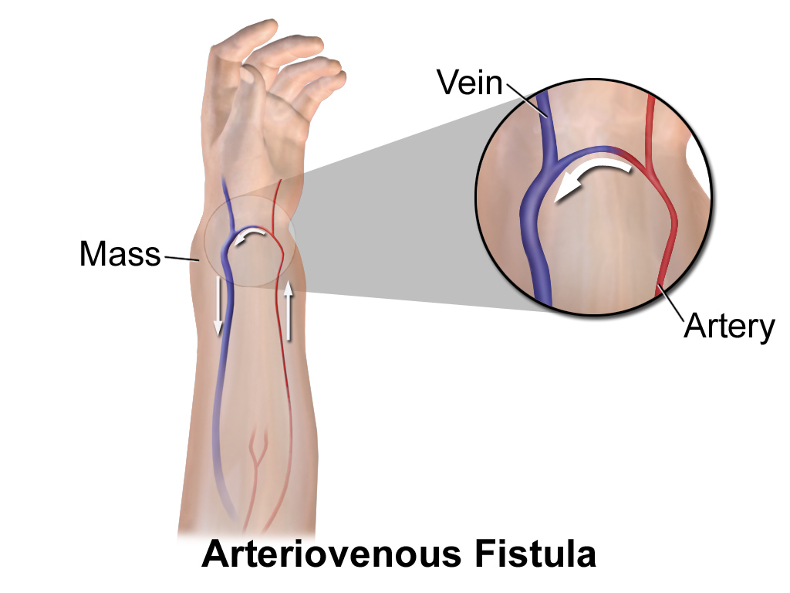

Tissues and the Integumentary System
A single cell handles everything by diffusion. Nothing inside it sits more than a few micrometers from the outside world. Now scale that cell up. Diffusion fails. The time a molecule needs to diffuse rises with the square of the distance. So a body built as one giant cell would starve at its center. Tissues are the answer evolution found. Cells specialize. They stick together in set patterns and hand off jobs. Epithelium separates compartments and moves solutes across them. Connective tissue carries load and holds the fluid that bathes it all. Muscle turns chemical energy into force. Nervous tissue carries information fast. Skin is where you can watch all four work together in one organ. It keeps water in and germs out. It keeps vitamin D coming. It holds core temperature near 37 °C. This module treats tissues and skin the way physiology demands. They are machines with gradients, pressures, flows and feedback loops.
By the end of this module you can
- Explain why diffusion distance limits cell size. Show how the four main tissue types solve that limit.
- Match tight junctions, desmosomes and gap junctions to three jobs. Those jobs are transepithelial resistance, mechanical strength and electrical coupling.
- Find the Na+/K+-ATPase and predict which way a polarized epithelium moves solutes. Use Fick’s relationship, J = D × A × ΔC / T, to explain flux.
- Use the Starling forces to explain how much fluid sits between cells. Name four mechanisms that produce edema.
- Describe how keratinocyte ripening and the stratum corneum lipid lamellae build a water barrier. Give the normal figure for transepidermal water loss.
- Diagram the thermoregulatory negative feedback loop. Name its variable, sensor, integrator, effectors and response.
- Calculate evaporative heat loss from a sweat rate. Explain why sweat is hypotonic, meaning dilute, by the time it reaches the surface.
- Put the four phases of wound healing in order. Give realistic time courses and tensile-strength values.
- Explain why extensive burns cause hypovolemia, hypothermia and infection. All three come from one failed barrier.
Section 1Why Tissues Exist: Diffusion Limits, Junctions and Compartments

Diffusion sets the size limit
Diffusion is not slow. Over short distances it is very fast. A small solute crosses 1 µm of cytosol in roughly 0.5 ms. But diffusion time rises with the square of the distance. Cross 10 µm and it takes about 50 ms. Cross 1 mm and it takes on the order of 500 seconds. Cross 10 mm and you wait close to 14 hours. That one squared relationship explains three things. No cell in the human body sits more than about 100–200 µm from a capillary. Alveolar walls are only 0.2–0.6 µm thick. And an organism larger than a millimeter needs a circulatory system, not patience.
The full statement is Fick’s law of diffusion. For our purposes it reads J = D × A × ΔC / T. Flux (J) is the amount that crosses. It rises with the diffusion coefficient of the substance (D). It rises with the surface area on offer (A). It rises with the concentration difference driving it (ΔC). And it falls as the barrier gets thicker (T). Each exchange surface in the body is built to make A large and T small. The small intestine folds itself to roughly 200 m2. The lung reaches about 70 m2. The glomerular filtration barrier is under 0.5 µm thick. Whenever you meet a new exchange organ later in this course, ask one question. Which term of that equation is its anatomy working on?
Tissues are the structural answer to that limit. One cell cannot do it all well. So groups of cells specialize. Then they arrange themselves in shapes that keep diffusion distances short. Sheets separate compartments. Gels hold fluid. Cables carry signals. Fibers make force. In a physiology course, histology is not a naming exercise. It is a map of where gradients may exist, and where they may not.
Four tissue types, four functional jobs
Epithelium is defined by what it does to gradients. It creates them and holds on to them. Epithelial cells are packed tightly with almost no matrix between them. They always rest on a basement membrane, a thin sheet of matrix below. They are avascular, meaning they hold no blood vessels of their own. Oxygen and nutrients diffuse up from the capillaries beneath. And they are polarized. The apical membrane faces a lumen or the outside world. The basolateral membrane faces the internal environment. That polarity is what turns a sheet of cells into a pump.
Connective tissue is built the opposite way. It has few cells and plenty of extracellular matrix, the material that sits between cells. Its physiology is mechanics and fluid. Collagen resists tension. Elastin gives energy back after a stretch. The ground substance holds water in a gel. That gel becomes the fluid between cells. Its glycosaminoglycans carry a negative charge, and charge pulls water in. Muscle tissue turns chemical energy into mechanical work, and it is excitable. Nervous tissue trades chemical gradients for information. It sends signals at 0.5–120 m/s. That is roughly a million times faster than diffusion over the same distance. Muscle and nervous tissue get their own module in this course. Their excitability is the reason.
| Tissue | Cells vs. matrix | What it does | Where you find it |
|---|---|---|---|
| Epithelial | Almost all cells | Barrier, regulated transport, secretion | Gut lining, nephron, epidermis, alveoli |
| Connective | Mostly matrix | Load bearing, fluid reservoir, transport medium | Dermis, tendon, bone, blood |
| Muscle | Almost all cells | Force and shortening, excitable | Skeletal, cardiac, smooth muscle |
| Nervous | Cells plus glia, little matrix | Fast electrical and chemical signaling | Brain, cord, peripheral nerves |
Junctions decide what a sheet can do
Three junction families give an epithelial sheet three separate jobs. Each job can be measured. Tight junctions (zonulae occludentes) form a continuous belt near the apical surface. Claudin and occludin proteins from neighboring cells meet there and seal the space between cells. They set the paracellular resistance, the resistance of the route between cells. The range is huge. Take a “leaky” epithelium such as the renal proximal tubule. Its transepithelial resistance is roughly 5–10 ohm·cm2. A “tight” one such as the collecting duct or urinary bladder can top 2,000 ohm·cm2. Leaky epithelia move huge volumes with small gradients. Tight epithelia move small volumes against steep gradients. Neither is better. Each one matches its job.
Anchoring junctions handle mechanical load. Desmosomes link the keratin filaments of neighboring cells through cadherin proteins. That makes the epidermis behave like a riveted sheet rather than a pile of cells. Hemidesmosomes staple the basal cells to the basement membrane. Two autoimmune diseases prove it. Antibodies against desmoglein cause pemphigus vulgaris. They split the epidermis inside itself and produce fragile, painful erosions. Antibodies against hemidesmosome antigens cause bullous pemphigoid. They split the epidermis away from the dermis and produce tense blisters. Same skin. Two different rivets. Two very different diseases.
Gap junctions do the opposite of sealing. They connect. Six connexin subunits form a connexon. Two connexons line up across the space between cells. They make a pore roughly 1.5 nm wide. Anything under about 1 kDa passes straight from one cytoplasm into the next. That includes ions, glucose, cyclic AMP and IP3. In practice this means electrical coupling. Cardiac muscle, single-unit smooth muscle and the pregnant uterus all contract as syncytia. That means they act as one joined sheet. Current flows through gap junctions instead of across membranes. In the epidermis, gap junctions coordinate the calcium waves that control how keratinocytes ripen.
Diffusion time rises with the square of the distance. That is why large organisms must build tissues. The junctions between cells then decide what a tissue sheet can do. A sheet can seal a gradient, bear a load, or share an electrical signal.
Section 2Epithelia: Barriers That Move Things
Polarity is the whole trick
An epithelial cell is not the same on both sides. That is the source of directional transport. The Na+/K+-ATPase is confined to the basolateral membrane. There it pumps 3 Na+ out of the cell. It pumps 2 K+ in for each ATP it splits. So sodium inside the cell sits at only about 10–15 mmol/L. Outside it is roughly 140 mmol/L. There is also a membrane potential near −70 mV. That electrochemical gradient is a battery. Almost all apical transporters spend it. SGLT1 drags glucose in against its own gradient by letting two Na+ come along. NHE3 exchanges Na+ in for H+ out. ENaC simply lets Na+ fall through a channel. Move the pump to the apical membrane instead, as the choroid plexus does. The same parts then run backwards, and absorption becomes secretion. Polarity sets direction, not the list of transporters.
Solute movement pulls water with it. There is no primary water pump anywhere in the body. Water always moves osmotically. It travels through aquaporins, or through the route between cells. It follows the solute that transport has just moved. When the intestine absorbs sodium and glucose, water follows. That is why oral rehydration solution contains both salt and sugar. It is why the solution works even in severe cholera, when intravenous fluid is unavailable. The absorbing parts are intact. It just needs sodium and a co-substrate to drive it.
Two routes cross an epithelium. The transcellular route goes through the cell, across two membranes. So it is selective, and the transporters the cell makes regulate it. The paracellular route goes between cells through the tight junction. Which claudins are expressed regulates that one. Take claudin-16 and claudin-19 in the thick ascending limb of the nephron. They form a pore that lets positive ions through, and it reabsorbs magnesium and calcium. Mutations there make the kidney waste magnesium. Tight junctions are not passive cement. They are tunable filters.
Reading epithelial architecture as function
Shape and layering are functional statements. Simple squamous epithelium is one cell thick. It is flattened to almost nothing, because its job is diffusion. Add up the alveolar type I cell, the fused basement membrane and the capillary endothelium. The total is about 0.2–0.6 µm. That keeps T small in Fick’s equation. Simple cuboidal and simple columnar epithelia are tall enough to hold mitochondria and transport machinery. They line the nephron and the gut, where active transport is the job. Microvilli on the small-intestinal brush border multiply apical area roughly twentyfold. That raises A in the same equation.
Stratified squamous epithelium gives up transport for protection. It has many layers and is replaced nonstop from below. In the epidermis the surface layer is dead and keratinized. Pseudostratified ciliated columnar epithelium of the airway does mucociliary clearance. Its cilia beat at 8–20 Hz. They move the mucus blanket 5–10 mm per minute toward the pharynx. Transitional epithelium (urothelium) has apical umbrella cells. Those carry a plaque-covered membrane plus reserve vesicles of spare membrane. So the bladder can stretch from about 50 mL to 500 mL. It still leaks nothing. The urine inside may be four times more concentrated than plasma.
| Epithelium | Design feature | What that buys | Where you find it |
|---|---|---|---|
| Simple squamous | Thinnest possible barrier (T) | Maximal diffusive flux, but fragile | Alveolus, capillary endothelium |
| Simple columnar with microvilli | Largest possible area (A) | Absorbs large amounts | Small intestine, proximal tubule |
| Stratified squamous keratinized | Many layers, dead surface | Abrasion and water barrier, no transport | Epidermis |
| Pseudostratified ciliated | Cilia plus mucus | Moves particles in one direction | Trachea, bronchi |
| Transitional | Umbrella cells, spare membrane in reserve | Stretches without leaking | Bladder, ureter |
Glands: epithelium that leaves home
Glands are epithelia that folded inward as the body formed. They kept on secreting. Endocrine glands lost their duct. They release product into the interstitium and then into the blood. So their signal is slow, taking seconds to hours. It is broadcast widely, and metabolism ends it. Exocrine glands kept the duct and deliver product to a surface. So their output is local, fast and often large in volume. The salivary glands produce 1–1.5 L/day. The pancreas produces 1–1.5 L/day of bicarbonate-rich juice.
Exocrine secretion has three mechanisms, and the difference matters clinically. Merocrine (eccrine) secretion is exocytosis with the cell left fully intact. Eccrine sweat glands and the pancreatic acinus work that way. Apocrine secretion pinches off an apical fragment of cytoplasm along with the product. The axillary apocrine glands do this. So does the mammary gland with its lipid droplets. Holocrine secretion destroys the whole cell. The sebaceous gland cell fills with lipid and falls apart. Its own membrane debris becomes the sebum. That is why sebaceous glands must keep rebuilding from a basal population. It is also why blocking their duct produces the comedo of acne.
Most exocrine glands modify their secretion in the duct. The duct is a second epithelium with its own controls. Sweat is the classic example, and Section 5 discusses it. The coil secretes a precursor that is isotonic, meaning as concentrated as plasma. The duct then reclaims sodium and chloride. So what reaches the skin is dilute. Secretion and modification are two steps, each with its own controls. You will see that design again in saliva, bile and urine.
A polarized epithelium is a machine. The basolateral Na+/K+-ATPase builds the sodium gradient. Apical transporters spend it to move specific solutes. Water then follows osmotically. So the architecture predicts both direction and capacity.
Section 3Connective Tissue, the Matrix, and the Interstitial Fluid Compartment

Fibers are the mechanical vocabulary
How connective tissue behaves follows straight from its two fiber proteins. Collagen is a triple helix. Hydroxyproline and hydroxylysine cross-links hold it steady. Type I collagen makes up roughly 70–80% of the dry weight of the dermis. It gives a tensile strength on the order of 50–100 MPa. Per unit of cross-section that is roughly a quarter that of mild steel. It is far beyond any other protein the body makes. Collagen is stiff and barely stretches past a few percent strain. So it works like a safety rope. It hangs slack at rest and bears load at the limit. Making it needs vitamin C as a cofactor for prolyl hydroxylase. That is why scurvy causes bleeding gums, poor wound healing, and old scars that reopen. Existing collagen turns over and cannot be replaced.
Elastin is the opposite. It is a cross-linked, coiled protein. It stretches to 150% of resting length and recoils with roughly 90% energy return. Arteries, lung tissue and skin all depend on it. Elastin is made almost all before age 20, and its half-life runs into decades. So in practice it cannot be replaced. Ultraviolet damage builds up over the years. It breaks down dermal elastin and disorganizes collagen. The result is solar elastosis, the clumped, yellowed, inelastic dermis of photoaged skin. Mechanically, a wrinkle is lost elastic recoil.
Between the fibers lies ground substance. These are proteoglycans built on glycosaminoglycans such as hyaluronan, chondroitin sulfate and dermatan sulfate. These molecules carry dense negative charge, and charge attracts water. One gram of hyaluronan can hold several liters of water in a hydrated gel. That gel is the interstitial compartment, the space between cells. It resists compression, which is why cartilage works. It slows the spread of bacteria. And it holds most of the interstitial fluid as a gel, not as free liquid. That is why you do not slosh.
Starling forces set interstitial volume
The volume of that interstitial compartment is not arbitrary. It is the steady-state result of four pressures acting across the capillary wall. The Starling equation states it: net filtration pressure = (Pc − Pif) − σ(πc − πif). Here are the typical values. Capillary hydrostatic pressure Pc is about 35 mmHg at the arteriolar end. It falls to about 15 mmHg at the venular end. Interstitial hydrostatic pressure Pif is near zero or slightly negative. In loose tissue it is about −2 mmHg. Plasma colloid osmotic pressure πc is about 25–28 mmHg. Albumin makes almost all of it. Interstitial colloid osmotic pressure πif runs about 5–8 mmHg. The reflection coefficient σ describes how impermeable the wall is to protein. It is near 1.0 in continuous capillaries and much lower in sinusoids.
Run the numbers. At the arteriolar end net filtration pressure is substantial and positive. It is (35 − (−2)) − (25 to 28 − 5 to 8), which comes to roughly +14 to +20 mmHg. Further along it turns slightly negative. It runs about 0 to −6 mmHg, once Pc has fallen to 15 mmHg. Across the whole body that filters roughly 20 L/day and reabsorbs about 17 L/day. That leaves 2–4 L/day for the lymphatics to return. So the lymphatic system is not optional drainage. It is the third Starling term made anatomical. It also returns the 100–200 g of plasma protein that escapes each day. Block it with filariasis or an axillary node dissection and the limb swells. Every other pressure can be perfectly normal.
Edema is what happens when this balance shifts, and there are exactly four mechanisms. Raise Pc, as heart failure, venous obstruction or a dependent limb does. Lower πc by losing albumin, as in nephrotic syndrome, cirrhosis or protein-calorie malnutrition. Normal serum albumin is 3.5–5.0 g/dL. It becomes clinically evident once albumin falls below roughly 2.5 g/dL. Increase permeability, so σ falls and protein leaks into the interstitium. Inflammation, burns and sepsis do that. Or obstruct lymphatic return. Naming the mechanism tells you the treatment. Guessing does not.
| Mechanism | Starling term changed | Typical cause | Protein in the fluid |
|---|---|---|---|
| Increased hydrostatic pressure | Pc up | Heart failure, DVT, standing a long time | Low (transudate) |
| Decreased oncotic pressure | πc down | Nephrotic syndrome, cirrhosis, malnutrition | Low (transudate) |
| Increased permeability | σ down | Burns, sepsis, histamine release | High (exudate) |
| Lymphatic obstruction | Return blocked | Node dissection, filariasis, tumor | High (protein-rich) |
Cells of the connective tissue and the inflammatory response
The resident cell is the fibroblast. It makes collagen, elastin and ground substance. It also remodels them nonstop by secreting matrix metalloproteinases. Turnover is real. Dermal collagen has a half-life of years. But the balance between synthesis and degradation shifts with age, ultraviolet exposure, cortisol and nutrition. Chronic glucocorticoid therapy suppresses fibroblast collagen synthesis. That is why long-term steroid users get thin, fragile skin. It tears easily and heals poorly.
Wandering cells make the connective tissue an immune surveillance space. Mast cells sit near vessels, loaded with histamine and heparin. When they degranulate, histamine acts at H1 receptors. Venular endothelial cells then contract, gaps open between them, and σ drops. That is the mechanism of the wheal. It is a localized, protein-rich edema produced by a permeability change within seconds. Macrophages engulf debris and present antigen. Plasma cells secrete antibody. Neutrophils flood in during acute inflammation.
Adipose tissue deserves its own mention, because it is not inert packing. White adipocytes store triglyceride in a single droplet. They insulate as well. Subcutaneous fat has a thermal conductivity roughly one-third that of muscle. They also work as an endocrine organ. They secrete leptin in proportion to fat mass, and adiponectin in inverse proportion to it. Brown adipose tissue is abundant in newborns. It is packed with mitochondria carrying uncoupling protein 1. That protein short-circuits the proton gradient, so oxidation produces heat instead of ATP. That is non-shivering thermogenesis, and it warms an infant who cannot yet shiver effectively.
Connective tissue is mechanics plus fluid. Collagen and elastin set how the material behaves. The four Starling forces and lymphatic drainage set the volume of the interstitial compartment. That compartment is the fluid each cell in the body actually lives in.
Section 4The Skin as a Barrier Organ

Building a waterproof layer out of dying cells
Skin is the largest organ by surface area. It covers about 1.5–2.0 m2 in an adult. Epidermis plus dermis weighs about 4–5 kg, roughly 6–7% of body mass. The 16% figure you often see counts the subcutaneous layer as well. The epidermis is very thin. It runs about 0.05–0.1 mm over most of the body. On palms and soles it rises to 0.8–1.5 mm. All that keeps you from drying out happens in the outer 10–20 µm.
The epidermis is a conveyor belt. Keratinocytes divide in the stratum basale. They are pushed upward, and they mature as they go. In the stratum spinosum they build up keratin filaments and desmosomes. In the stratum granulosum two decisive things happen. Keratohyalin granules produce profilaggrin, which is cut into filaggrin, and filaggrin packs keratin into dense bundles. At the same time lamellar bodies discharge their lipid contents into the space between cells. Then the cell carries out a controlled death. The nucleus and organelles are broken down. A cross-linked cornified envelope of involucrin and loricrin replaces the plasma membrane. The trip from basal division to shedding takes about 40–56 days. In psoriasis it collapses to 4–7 days. Cells reach the surface before they can finish that program. That is why the scale is thick, poorly stuck down, and still holding nuclei.
The finished stratum corneum is 15–20 layers of flattened corneocytes set in a lipid matrix. Picture bricks and mortar. The mortar is the barrier. It is roughly equal parts ceramides, cholesterol and free fatty acids, stacked in mostly crystalline lamellae. Water has to wind its way through that lipid. The path it actually travels is 10–50 times longer than the layer is thick. Measured transepidermal water loss is only about 4–8 g/m2 per hour. Spread that over 1.5–2.0 m2 for 24 hours. You get roughly 200–400 mL/day of insensible loss through skin. Another 250–350 mL/day leaves through the airway. Strip the stratum corneum off with tape and that figure rises more than tenfold within minutes.
The barrier repairs itself by negative feedback
Barrier maintenance is a genuine control loop. It is worth naming its parts the way you would for any other loop. The controlled variable is barrier integrity, read out as water flux. The sensor is the epidermal calcium gradient. Calcium is normally low in the basal layers and high in the stratum granulosum. That gradient holds only because water is not flowing outward. The integrator is the granular keratinocyte. High calcium outside it steadily holds back its lamellar body secretion. Breach the barrier and water flux washes the gradient away. Calcium falls, the brake comes off, and the effector response begins. Preformed lamellar bodies are released at once. Within hours the cell also steps up its production of cholesterol, ceramides and fatty acids. The response rebuilds the lipid lamellae. Water flux falls, calcium builds back up, and secretion switches off. Roughly 50–60% of barrier function returns within 6 hours of an acute disruption. Full recovery takes 3–5 days.
This loop explains a great deal of clinical dermatology. Loss-of-function mutations in the filaggrin gene are the strongest known genetic risk factor for atopic dermatitis. Without filaggrin, keratin is bundled poorly. Natural moisturizing factor drops too. It is made mostly of filaggrin breakdown products, such as urocanic acid and pyrrolidone carboxylic acid. Transepidermal water loss rises. Allergens then reach the immune system below. The barrier defect comes first and the allergy follows. That reframes emollient therapy. It treats the mechanism rather than just relieving a symptom.
Two chemical features complete the barrier. The surface pH is 4.5–5.5. That is the acid mantle. Sweat lactate, sebum fatty acids and the sodium–hydrogen exchanger of the granular layer produce it. The acidity does real work. It favors the enzymes that make ceramides. It restrains the serine proteases that dissolve desmosomes. And it suppresses Staphylococcus aureus while tolerating commensal flora. Alkaline soaps briefly raise pH to 6–7, and barrier recovery measurably slows. Sebum is the second feature. It is secreted holocrine at 1–2 mg per 10 cm2 per 3 hours. Androgens drive it strongly. It adds triglycerides, wax esters and squalene. Those lubricate hair and supply antimicrobial free fatty acids.
Ultraviolet radiation: damage, defense and a hormone
Melanocytes sit in the stratum basale. There is roughly one melanocyte for every 4–10 keratinocytes. This surprises students. That density is almost the same in all human populations. Differences in skin color come from somewhere else. They come from melanosome size and number. They come from how fast melanosomes are broken down. And they come from the ratio of brown-black eumelanin to red-yellow pheomelanin. They do not come from melanocyte counts. Each melanocyte reaches 30–40 keratinocytes with its dendrites. That group is an epidermal melanin unit. The melanosomes it hands over are arranged as a cap over the nucleus. It is a physical parasol, placed exactly where the DNA is.
Ultraviolet B (280–315 nm) is absorbed directly by DNA, and it makes cyclobutane pyrimidine dimers. Ultraviolet A (315–400 nm) reaches deeper into the dermis. It works mostly through reactive oxygen species, damaging collagen and elastin. Melanin absorbs both and quenches those radicals. The tanning response is delayed by 48–72 hours. It has to wait for tyrosinase to make new melanin after p53-mediated signaling. The darkening you see within minutes is only oxidation of melanin that was already there. It gives little protection.
The same ultraviolet B that damages DNA also does something essential. It converts 7-dehydrocholesterol in the plasma membranes of basal and spinous keratinocytes into previtamin D3. Heat then rearranges that into cholecalciferol. The liver adds a hydroxyl at position 25. The kidney adds another at position 1, under parathyroid hormone control. The product is 1,25-dihydroxyvitamin D, the active hormone that drives intestinal calcium absorption. Ten to thirty minutes of midday sun on face and arms is enough for most lightly pigmented adults. They need that several times a week. Deeply pigmented skin may need three to six times that exposure for the same yield. Glass, sunscreen, latitude above about 37° in winter, and age all cut skin synthesis substantially. In this respect the skin is an endocrine organ.
The barrier is the lipid mortar between dead corneocytes. A negative feedback loop that senses calcium resupplies that lipid on demand. And the same layer that keeps water in lets ultraviolet B in. That is how vitamin D gets made.
Section 5Skin as a Control Organ: Heat, Blood Flow, Sensation and Repair

The thermoregulatory loop, named part by part
Core temperature is held at 37.0 °C. The normal range is about 36.5–37.5 °C. It swings roughly 0.5–1.0 °C across the day. It is lowest around 04:00 and highest in the late afternoon. That stability is negative feedback, and you can name each part. The controlled variable is core temperature, meaning the temperature of the hypothalamus and the central blood. The sensors are warm- and cold-sensitive neurons in the preoptic and anterior hypothalamus. They change firing rate steeply for a change of only 0.1 °C. Peripheral thermoreceptors in the skin add their own report. They use TRPM8 for cool and TRPV3 and TRPV4 for innocuous warmth. TRPV1 is reserved for noxious heat above about 43 °C. Skin input gives feed-forward warning. Central input gives the error signal. The integrator is the preoptic area. It compares incoming traffic against the set point and sends out a matching command. The effectors are cutaneous arterioles, eccrine sweat glands, skeletal muscle and behavior. The response restores temperature and abolishes the error. That is the defining signature of negative feedback.
Heat leaves the body by four physical routes. Radiation accounts for about 60% of loss at rest in a comfortable room. Conduction and convection account for about 15–20%. Evaporation accounts for about 20–25%. Radiation, conduction and convection all depend on the gradient between skin and environment. So all three fail once the air is as warm as the skin. That happens at roughly 33–35 °C. Above that point evaporation is the only avenue left. And evaporation depends on the water vapor pressure gradient. So 35 °C with 90% humidity is far more dangerous than 40 °C in dry desert air.
The cheap effector is blood flow. Skin receives about 250–500 mL/min at thermoneutrality. That is roughly 5–10% of a resting cardiac output of 5 L/min. But it can fall below 50 mL/min in the cold. It can rise to 6–8 L/min in maximal heat stress. That is a more than hundredfold range. Cardiac output itself climbs toward 12–13 L/min in severe heat. So at the extreme the skin is taking more than half of it. Two mechanisms do this. Glabrous skin means hairless skin, such as palms, soles, lips and ears. There, arteriovenous anastomoses shunt blood straight from arteriole to venule and bypass the capillaries. Sympathetic noradrenergic vasoconstrictor tone controls almost all of it. Release that tone and you open a radiator. In non-glabrous skin, active vasodilation takes over. Sympathetic cholinergic fibers drive it. They release acetylcholine plus a co-transmitter. They account for about 80–90% of the rise in skin blood flow during heat stress. This is the rare place where increased sympathetic firing causes vasodilation.
Sweat: an isotonic secretion made hypotonic on the way out
Two to four million eccrine glands cover the body. They are densest on palms, soles and forehead. Each one is a coiled secretory tubule plus a straight duct. Sympathetic cholinergic fibers supply them, acting on muscarinic receptors. That is another anatomical exception. It is also the reason anticholinergic drugs cause dry, hot skin and impair heat tolerance. The clear cells of the coil secrete a precursor fluid. It is almost isotonic with plasma, near 140 mmol/L sodium. The NKCC1 cotransporter drives it, chloride follows, and water is dragged along osmotically.
The duct then reabsorbs sodium through ENaC and chloride through CFTR. But the duct is fairly water-impermeable. So salt leaves and water stays behind. Final sweat sodium ranges from 10 to 60 mmol/L. It depends on sweat rate, since a high flow leaves less time for reabsorption. It also depends on aldosterone-driven acclimatization. That can halve sweat sodium over 10–14 days of heat exposure. In cystic fibrosis, CFTR is non-functional. Chloride cannot be reclaimed. A sweat chloride of 60 mmol/L or more is then diagnostic. The sweat test is a direct readout of duct physiology.
The numbers matter for practice. Evaporating 1 mL of sweat removes about 0.58 kcal (2.43 kJ). So 1 L of evaporated sweat removes roughly 580 kcal. An unacclimatized adult sustains about 1.0–1.5 L/h. An acclimatized athlete can reach 2–3 L/h briefly. Note the word evaporated. Sweat that drips off the chin cools nothing. The phase change never happened at the skin. In heat exhaustion, sweating continues. But volume and salt losses outstrip replacement, and cardiac output fails. In heat stroke, thermoregulation itself fails. Core temperature exceeds 40 °C, mental status changes, and the skin is often hot and dry. That is a genuine emergency. Cold defense runs the loop in reverse. Cutaneous vasoconstriction comes first. Then shivering, which can raise metabolic heat production three- to fivefold. In neonates, non-shivering thermogenesis in brown fat adds more.
| Route | Driving gradient | Share at rest | Fails when |
|---|---|---|---|
| Radiation | Skin versus surroundings temperature | ~60% | Air gets as warm as the skin |
| Conduction | Skin versus the object you touch | ~3% | The surface you touch is warm |
| Convection | Air moving over the skin | ~12–15% | Still, hot air |
| Evaporation | Water vapor pressure difference | ~20–25% | Humidity is high, or sweat drips off |
Sensation and repair
The dermis is a sensory sheet. What a receptor encodes depends on how it is built. Meissner corpuscles sit in the dermal papillae. They adapt rapidly and are tuned to flutter at 10–50 Hz. Pacinian corpuscles sit deep in the dermis. Their onion-layer capsule filters out steady pressure. That leaves them very sensitive to vibration at 200–300 Hz. Merkel discs adapt slowly and encode form and texture. Ruffini endings adapt slowly and encode skin stretch and finger position. Spatial acuity follows receptor density and cortical representation. Two-point discrimination is 2–3 mm on the fingertip but 40–50 mm on the back. Free nerve endings serve pain and temperature. TRPV1 opens above about 43 °C, and capsaicin opens it too. TRPM8 responds to cooling below about 26 °C, and so does menthol. That is why chili feels hot and mint feels cold with no temperature change at all.
Repair proceeds in four overlapping phases. Hemostasis begins within seconds. There is vasoconstriction, a platelet plug, and a clotting cascade. That cascade is one of the body’s few true positive feedback loops. Thrombin activates factors V, VIII and XI, and those generate more thrombin. Positive feedback is used here because the goal is a rapid, all-or-none event that stops itself. It is safe for two reasons. It ends when the substrate runs out. And antithrombin and protein C stand ready to brake it. Inflammation runs from hours to about day 3. Neutrophils arrive first. Macrophages take over by 48–72 hours. They direct debridement and growth factor release. Proliferation spans roughly days 3–21. Fibroblasts lay down type III collagen. Angiogenesis builds granulation tissue. Myofibroblasts contract the wound edges. Keratinocytes migrate in from the margins and from follicular stem cells to re-epithelialize. Remodeling lasts 3 weeks to 1–2 years. It replaces type III collagen with stronger type I. It also lines the fibers up along the lines of stress.
Tensile strength lags badly behind skin that looks closed, and this is worth memorizing. Strength is about 5% of the original at 1 week. It is 20% at 3 weeks. It is 60% at 3 months. It then plateaus near 70–80% and is never fully recovered. That gap explains why a wound can dehisce, meaning split open, after the sutures come out. It is why patients are restricted from heavy lifting for weeks. Healing slows with poor perfusion, because fibroblasts and collagen cross-linking require oxygen. It also slows with diabetes, smoking and glucocorticoids. It slows with a protein or vitamin C deficiency, and with infection.
Burns make the argument of this whole module in a single lesion. Destroy the epidermis over a wide area and you lose all three barrier functions at once. Water evaporates unchecked. Losses can exceed 200 mL/m2 per hour, against a normal 4–8 g/m2 per hour. So intravascular volume falls. Capillary permeability rises, so σ collapses and protein-rich fluid pours into the interstitium. That compounds the hypovolemia. Evaporative cooling becomes uncontrolled, and the patient becomes hypothermic in a warm room. And the microbial barrier is gone. Resuscitation formulas such as Parkland simply do the math on Starling forces and evaporative loss. Parkland gives 4 mL of lactated Ringer’s per kilogram, per percent of total body surface area burned. That covers the first 24 hours, with half of it in the first 8.
The skin is the hypothalamus’s main effector organ. It varies blood flow up to a hundredfold. It can evaporate up to 2 L of hypotonic sweat per hour. Together those defend core temperature within about 1 °C. Destroy that barrier and its vasculature, and fluid, heat and infection control fail together.
The module in one breath
Diffusion time rises with the square of the distance. So any organism larger than a millimeter must divide the labor among tissues. Epithelium builds and defends gradients. It is polarized, so the basolateral Na+/K+-ATPase creates a sodium battery that apical transporters spend. Water always follows solute. It is never pumped itself. Tight junctions set paracellular resistance across a range of 5 to more than 2,000 ohm·cm2. Desmosomes bear mechanical load. Gap junctions couple cells electrically. Connective tissue supplies mechanics and fluid. Collagen resists tension, elastin returns energy, and the charged ground substance holds the interstitial fluid. The Starling forces set the volume of that fluid. The balance filters about 20 L/day, reabsorbs 17 L, and hands 3 L to the lymphatics. Skin assembles all of this into one organ. Dead, lipid-mortared corneocytes hold transepidermal water loss to 4–8 g/m2 per hour. A calcium-sensed feedback loop resupplies that lipid when it is breached. Melanin caps nuclei against ultraviolet, while the same wavelengths make vitamin D. And the hypothalamus works through two effectors in the skin. They are cutaneous blood flow and hypotonic eccrine sweat. That negative feedback loop holds core temperature near 37 °C.
Words worth knowing
| Term | What it means |
|---|---|
| Basement membrane | A sheet of collagen IV, laminin and proteoglycan. Every epithelium sits on it. It anchors cells and filters what reaches them. |
| Tight junction | A claudin-and-occludin belt that seals the space between epithelial cells. It sets paracellular resistance from about 5 to over 2,000 ohm·cm2. |
| Desmosome | A cadherin-based rivet that links the keratin filaments of neighboring cells. It carries the mechanical load in the epidermis. |
| Gap junction | A connexon pore about 1.5 nm wide. Ions and molecules under 1 kDa pass straight through, so cells couple electrically. |
| Epithelial polarity | Apical and basolateral membranes kept separate, with the Na+/K+-ATPase basolateral. It is the origin of directional transport. |
| Transcellular vs paracellular | Transport through the cell versus between cells. Through the cell is selective and limited by transporters. Between cells is limited by junctions and tuned by claudins. |
| Fick’s relationship | J = D × A × ΔC / T. Flux rises with area and with the gradient. It falls as the barrier gets thicker. |
| Merocrine, apocrine, holocrine | Three ways to secrete. Exocytosis with the cell left intact. Loss of an apical fragment. Total destruction of the cell, as in sebaceous glands. |
| Ground substance | The watery proteoglycan gel of the matrix. Its fixed negative charge holds most of the interstitial water. |
| Starling forces | NFP = (Pc − Pif) − σ(πc − πif). It sets filtration and interstitial volume. |
| Edema | Too much fluid between cells. It comes from raised Pc, low πc, increased permeability, or blocked lymphatics. |
| Stratum corneum | 15–20 layers of corneocytes in ceramide-cholesterol-fatty acid lamellae. This is the actual water barrier. |
| Filaggrin | A protein that bundles keratin and yields natural moisturizing factor. Losing it is the top genetic risk for atopic dermatitis. |
| Transepidermal water loss | Water passing unseen through intact skin. Normally 4–8 g/m2 per hour, or roughly 200–400 mL/day for a whole adult. |
| Acid mantle | A surface pH of 4.5–5.5. It supports ceramide synthesis, restrains the enzymes that shed cells, and suppresses pathogens. |
| Epidermal melanin unit | One melanocyte plus the 30–40 keratinocytes it supplies with melanosomes that cap the nucleus. |
| Arteriovenous anastomosis | A direct arteriole-to-venule shunt in hairless skin, under sympathetic vasoconstrictor control. It works as a radiator switch. |
| Evaporative heat loss | About 0.58 kcal removed per mL of sweat evaporated. It is the only route left once the air is warmer than the skin. |
| Non-shivering thermogenesis | Heat made by UCP1 uncoupling in brown adipose tissue. It is the newborn’s main defense against cold. |
| Granulation tissue | New capillaries, fibroblasts and temporary type III collagen filling a wound during the proliferative phase. |